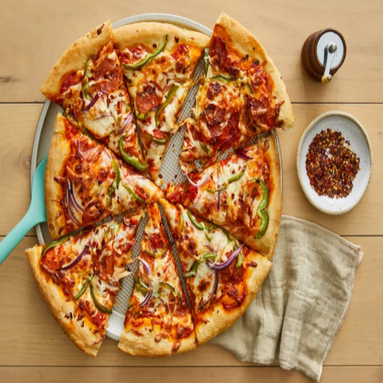
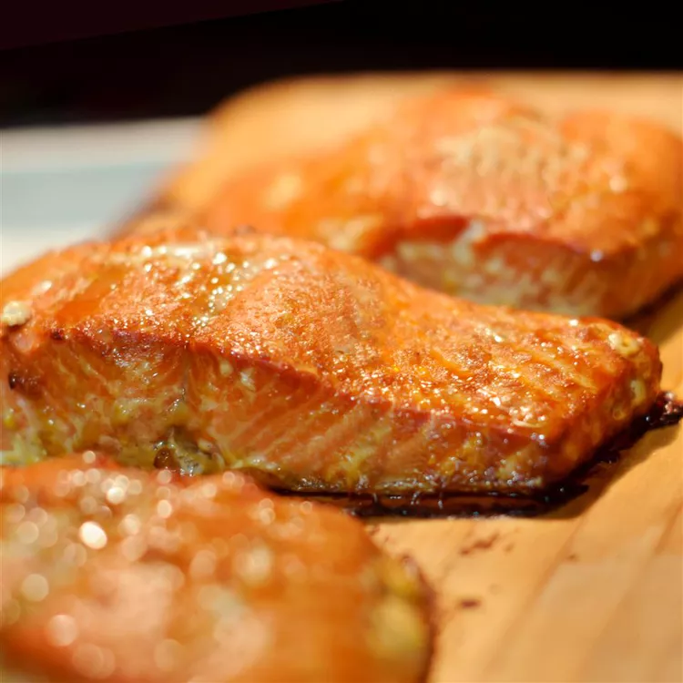

Pizza

Salmon

Banana Bread
| Recipes | Cooking Time |
|---|---|
| Pizza | 30 min. |
| Salmon | 45 min. |
| Banana Bread | 35 min. |
| Recipes | Cooking Time |
|---|---|
| Pizza | 30 min. |
| Salmon | 45 min. |
| Banana Bread | 35 min. |